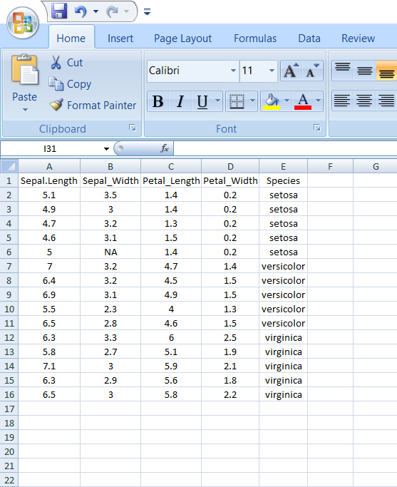
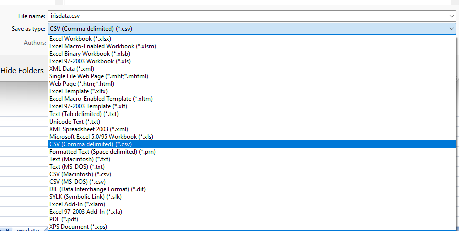
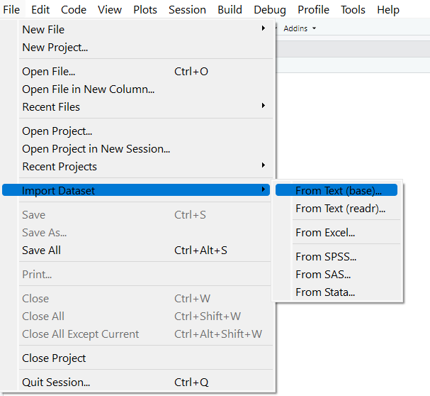

3 Importing, validating, and exporting data
3.1 Learning outcomes
Prepare a rectangular data file, import CSV and Excel files, retrieve a documented online file, validate imported values, and export data without accidental row-number columns.
In the previous chapter we have discussed the very basics of R programming including installation, launching, basic data types and arithmetic functions. Here, you will learn how to import data into R. It is important to ensure that your data is well prepared before importing it into R to avoid errors.
3.2 Preparing your file
File can be prepared in MS Excel
Use the first row as column headers (or column names). Generally, columns represent variables.
Keep a unique observation identifier in an ordinary column. Generally rows represent observations; an identifier need not be assigned as R row names.
Make each observation identifier unique. In experiments, treatment labels should repeat across replicates in a separate treatment column; treatment names are not unique plot identifiers.
Column names should be compatible with R naming conventions.
3.2.1 Naming conventions:
Avoid names with blank spaces. Bad column name
Sepal width; Good conventionSepal_widthAvoid names with special symbols: ?, $, *, +, #, (, ), -, /, }, {, |, >, < etc. Letters, digits, underscores, and dots can be used in ordinary syntactic names; a simple naming convention is easier to maintain.
Avoid beginning variable names with a number. Use letter instead. Good column names: obs_100m or x100m. Bad column name: 100m
Column names must be unique. Duplicated names are not allowed.
R is case sensitive. This means that Name, NAME and name, naMe all are treated as different.
Avoid blank rows in your data
Delete any comments in your file
Replace missing values by NA (denotes Not Available)
If you have a column containing date, use the four digit format. Good format: 01/01/2016. Bad format: 01/01/16
A final good looking file
3.2.2 Saving file
I recommend you to save your file in .csv (comma separated value file) format.
Why CSV?
The usual file we save in MS Excel will be saved as XLS files or XLSX files. Workbook files for Microsoft Excel from 97 to 2003 are known as XLS files. The XLSX extension is used by later versions of Excel. All of the data from the worksheets in a workbook, including formatting, charts, graphics, calculations, and more, is contained in the XLS and XLSX file formats.
The Comma Separated Values (CSV) format is a plain text format in which values are separated by commas, whereas the Excel Sheets binary file format (XLS) contains information on all of the worksheets in a file, including both content and formatting. Any spreadsheet programme, including Microsoft Excel, Open Office, Google Sheets, etc., can open CSV files. A straightforward text editor can also be used to open CSV files. Because it is straightforward and compatible with the majority of platforms, it is a very prevalent and well-liked file format for storing and accessing data. But there are certain drawbacks to this simplicity. CSV files can only contain a single sheet without any formatting or formulas.
While CSV files are supported by almost all data upload interfaces, Excel (XLS and XLSX) file types are preferable for storing more complicated data. The CSV file format may be more advantageous if you intend to move your data between platforms or export and import it between interfaces.
3.2.3 How to save as csv
Under the "File name" section in the "Save As" tab, you can select "Save as type" and change it to "CSV (Comma delimited) (*.csv).


3.3 Importing Data set in Rstudio
To import a csv file in Rstudio
click on File then click on Import Dataset then select from Text (base)

Select the file and click open

In the Import Dataset dialogue box you can change the name of the dataset in the Box under Name. Heading radio button will be default ‘yes’. Click on import. The dataset will be now imported and ready to work on.
3.3.1 Alternate methods
3.3.1.1 Importing csv files
Data can be also imported using read.csv() function in R. read.csv('path to the file')
# example
my_data<-read.csv(file = 'data/iris.csv')
# here now the data set iris.csv is stored in the name my_data
# You can now directly do operations on the my_data
summary(my_data) Sepal_Length Sepal_Width Petal_length Petal_Width
Min. :4.600 Min. :2.300 Min. :1.300 Min. :0.200
1st Qu.:5.050 1st Qu.:2.925 1st Qu.:1.450 1st Qu.:0.200
Median :6.300 Median :3.050 Median :4.600 Median :1.500
Mean :5.907 Mean :3.021 Mean :3.873 Mean :1.247
3rd Qu.:6.500 3rd Qu.:3.200 3rd Qu.:5.350 3rd Qu.:1.850
Max. :7.100 Max. :3.500 Max. :6.000 Max. :2.500
NA's :1
Species
Length:15
Class :character
Mode :character
3.3.1.2 Importing excel files
Excel import requires an additional package. The original xlsx example is retained as an optional alternative; the worked agricultural import below uses readxl, which does not require Java.
library(xlsx)
df <-read.xlsx("path/file.xlsx", n)
# n is n-th worksheet to import3.4 Accessing the variables
The variables in the data can be accessed using $ symbol to the data name
my_data<-read.csv(file = 'data/iris.csv')
# Accessing variable Petal_length
my_data$Petal_length [1] 1.4 1.4 1.3 1.5 1.4 4.7 4.5 4.9 4.0 4.6 6.0 5.1 5.9 5.6 5.8# You can perform functions on them
summary(my_data$Petal_length) Min. 1st Qu. Median Mean 3rd Qu. Max.
1.300 1.450 4.600 3.873 5.350 6.000 3.4.1 Understanding attach() and detach() in existing scripts
Without using the name of the data frame, you can access the variables in the data framework using the attach() function in the R language. The data framework attachment created by the attach() function is removed using the detach() function.
The database is attached to the R search path. This means that the database is searched by R when evaluating a variable, so objects in the database can be accessed by simply giving their names.
my_data<-read.csv(file = 'data/iris.csv')
# Using function attach
attach(my_data)
# Accessing variable Petal_length, now you can call variable name directly without using my_data
Petal_length [1] 1.4 1.4 1.3 1.5 1.4 4.7 4.5 4.9 4.0 4.6 6.0 5.1 5.9 5.6 5.8# You can perform functions on them
summary(Petal_length) Min. 1st Qu. Median Mean 3rd Qu. Max.
1.300 1.450 4.600 3.873 5.350 6.000 # Using detach function
detach(my_data)3.5 Some useful functions
3.5.1 str()
R object structures are displayed by str(). str() is frequently used to display a list’s contents.It is used particularly when the data set is huge.
my_data<-read.csv(file = 'data/iris.csv')
# Using str() function
str(my_data)'data.frame': 15 obs. of 5 variables:
$ Sepal_Length: num 5.1 4.9 4.7 4.6 5 7 6.4 6.9 5.5 6.5 ...
$ Sepal_Width : num 3.5 3 3.2 3.1 NA 3.2 3.2 3.1 2.3 2.8 ...
$ Petal_length: num 1.4 1.4 1.3 1.5 1.4 4.7 4.5 4.9 4 4.6 ...
$ Petal_Width : num 0.2 0.2 0.2 0.2 0.2 1.4 1.5 1.5 1.3 1.5 ...
$ Species : chr "setosa" "setosa" "setosa" "setosa" ...3.6 View()
my_data<-read.csv(file = 'data/iris.csv')
# Using str() function
View(my_data)In the example above, attach() temporarily copies names onto the search path. Editing the original data frame afterwards can leave those attached values out of date. Use explicit column references in your practical submissions.
3.7 Datasets in R
There are various pre-built data sets included with R, which are typically used as practice sets for playing with R functions. We’ll first go through how to load and use built-in R data sets in this lecture. The most popular R demo data sets will then be discussed, including mtcars, iris, ToothGrowth, PlantGrowth, and USArrests.
3.8 Pre-loaded data
To see the list of pre-loaded data in your system, type the function data():
data()3.9 Loading a built-in R data
Load and print mtcars data as follow:
# Loading
data(mtcars)
# Print the first 6 rows
head(mtcars, 6) mpg cyl disp hp drat wt qsec vs am gear carb
Mazda RX4 21.0 6 160 110 3.90 2.620 16.46 0 1 4 4
Mazda RX4 Wag 21.0 6 160 110 3.90 2.875 17.02 0 1 4 4
Datsun 710 22.8 4 108 93 3.85 2.320 18.61 1 1 4 1
Hornet 4 Drive 21.4 6 258 110 3.08 3.215 19.44 1 0 3 1
Hornet Sportabout 18.7 8 360 175 3.15 3.440 17.02 0 0 3 2
Valiant 18.1 6 225 105 2.76 3.460 20.22 1 0 3 13.10 Most used data sets in R
3.10.1 mtcars
mtcars data was extracted from the 1974 Motor Trend US magazine, and comprises fuel consumption and 10 aspects of automobile design and performance for 32 automobiles (1973–74 models).
# 1. Loading
data("mtcars")
# 2. Print
head(mtcars) mpg cyl disp hp drat wt qsec vs am gear carb
Mazda RX4 21.0 6 160 110 3.90 2.620 16.46 0 1 4 4
Mazda RX4 Wag 21.0 6 160 110 3.90 2.875 17.02 0 1 4 4
Datsun 710 22.8 4 108 93 3.85 2.320 18.61 1 1 4 1
Hornet 4 Drive 21.4 6 258 110 3.08 3.215 19.44 1 0 3 1
Hornet Sportabout 18.7 8 360 175 3.15 3.440 17.02 0 0 3 2
Valiant 18.1 6 225 105 2.76 3.460 20.22 1 0 3 1# Number of rows (observations)
nrow(mtcars) [1] 32# Number of columns (variables)
ncol(mtcars)[1] 11If you want learn more about mtcars data sets, type this: ?mtcars
?mtcars3.10.2 iris
iris data set gives the measurements in centimeters of the variables sepal length, sepal width, petal length and petal width, respectively, for 50 flowers from each of 3 species of iris. The species are Iris setosa, versicolor, and virginica.
data("iris")
head(iris) Sepal.Length Sepal.Width Petal.Length Petal.Width Species
1 5.1 3.5 1.4 0.2 setosa
2 4.9 3.0 1.4 0.2 setosa
3 4.7 3.2 1.3 0.2 setosa
4 4.6 3.1 1.5 0.2 setosa
5 5.0 3.6 1.4 0.2 setosa
6 5.4 3.9 1.7 0.4 setosaIf you want learn more about iris data sets, type this: ?iris
?iris3.10.3 ToothGrowth
The results of an experiment examining the impact of vitamin C on tooth development in 60 Guinea pigs are included in the data set. Each guinea pig received one of three vitamin C dose levels (0.5, 1, and 2 mg/day) using either ascorbic acid or orange juice as the delivery mechanism (a form of vitamin C and coded as VC).
data("ToothGrowth")
head(ToothGrowth) len supp dose
1 4.2 VC 0.5
2 11.5 VC 0.5
3 7.3 VC 0.5
4 5.8 VC 0.5
5 6.4 VC 0.5
6 10.0 VC 0.5If you want learn more about ToothGrowth data sets, type this: ?ToothGrowth
?ToothGrowth3.10.4 PlantGrowth
Results from an experiment comparing yields between two treatment conditions and a control condition, measured as plant dry weight. The group codes do not specify fertilizer names or application rates.
data("PlantGrowth")
head(PlantGrowth) weight group
1 4.17 ctrl
2 5.58 ctrl
3 5.18 ctrl
4 6.11 ctrl
5 4.50 ctrl
6 4.61 ctrl3.10.5 USArrests
Statistics on the rates of violent crime in each US state
data("USArrests")
head(USArrests) Murder Assault UrbanPop Rape
Alabama 13.2 236 58 21.2
Alaska 10.0 263 48 44.5
Arizona 8.1 294 80 31.0
Arkansas 8.8 190 50 19.5
California 9.0 276 91 40.6
Colorado 7.9 204 78 38.73.11 Agricultural applications, interpretation, and further practice
3.11.1 Prepare the table before analysis
Use one header row, one observational unit per row, and one variable per column. Record units in a data dictionary. Avoid merged cells, colour-coded values without a corresponding variable, and subtotals mixed into observations. Keep raw files unchanged. Store corrections in code and separate outputs. Use explicit identifiers rather than relying on row order.
Names such as yield_t_ha and ISO dates such as 2024-06-15 reduce ambiguity. R can handle nonstandard column names with backticks, but simple unique names are easier to teach and maintain. CSV stores values in a single plain-text table; it does not preserve spreadsheet formatting, formulas, or multiple worksheets.
3.11.2 Import and inspect a CSV
crop <- read.csv("data/crop_trial.csv", na.strings = c("", "NA"))
head(crop) plot_id block treatment variety replicate nitrogen_kg_ha rainfall_mm
1 P001 1 Control A 1 10.2 601.5
2 P002 1 Control A 2 23.0 782.1
3 P003 1 Control B 1 21.2 609.0
4 P004 1 Control B 2 26.0 696.9
5 P005 1 Compost A 1 63.1 581.8
6 P006 1 Compost A 2 63.3 682.6
yield_t_ha
1 2.42
2 2.82
3 2.40
4 2.86
5 3.52
6 3.14str(crop)'data.frame': 60 obs. of 8 variables:
$ plot_id : chr "P001" "P002" "P003" "P004" ...
$ block : int 1 1 1 1 1 1 1 1 1 1 ...
$ treatment : chr "Control" "Control" "Control" "Control" ...
$ variety : chr "A" "A" "B" "B" ...
$ replicate : int 1 2 1 2 1 2 1 2 1 2 ...
$ nitrogen_kg_ha: num 10.2 23 21.2 26 63.1 ...
$ rainfall_mm : num 602 782 609 697 582 ...
$ yield_t_ha : num 2.42 2.82 2.4 2.86 3.52 3.14 3.83 4.28 4.11 4.05 ...dim(crop)[1] 60 8summary(crop) plot_id block treatment variety
Length:60 Min. :1 Length:60 Length:60
Class :character 1st Qu.:2 Class :character Class :character
Mode :character Median :3 Mode :character Mode :character
Mean :3
3rd Qu.:4
Max. :5
replicate nitrogen_kg_ha rainfall_mm yield_t_ha
Min. :1.0 Min. : 10.20 Min. :508.4 Min. :2.400
1st Qu.:1.0 1st Qu.: 27.75 1st Qu.:581.5 1st Qu.:3.272
Median :1.5 Median : 64.30 Median :625.2 Median :3.875
Mean :1.5 Mean : 62.52 Mean :639.7 Mean :3.772
3rd Qu.:2.0 3rd Qu.: 96.92 3rd Qu.:698.0 3rd Qu.:4.220
Max. :2.0 Max. :105.00 Max. :795.9 Max. :5.160 stopifnot(!anyDuplicated(crop$plot_id), nrow(crop) == 60,
all(crop$yield_t_ha > 0))
crop$treatment <- factor(crop$treatment,
levels = c("Control", "Compost", "Mineral"))Importing is not validation. Confirm row counts, identifiers, plausible ranges, category spelling, and numeric types against the field sheet. A decimal comma or a text entry such as "5 kg" can cause a measurement column to be imported as text. read.csv2() is useful for semicolon-separated files with decimal commas; inspect the actual file rather than guessing.
3.11.3 Excel round trip
readxl reads Excel workbooks without requiring Java. The supplied workbook contains a trial sheet with the same simulated observations as the CSV.
excel_crop <- readxl::read_excel("data/crop_trial.xlsx", sheet = "trial")
head(excel_crop)# A tibble: 6 x 8
plot_id block treatment variety replicate nitrogen_kg_ha rainfall_mm
<chr> <dbl> <chr> <chr> <dbl> <dbl> <dbl>
1 P001 1 Control A 1 10.2 602.
2 P002 1 Control A 2 23 782.
3 P003 1 Control B 1 21.2 609
4 P004 1 Control B 2 26 697.
5 P005 1 Compost A 1 63.1 582.
6 P006 1 Compost A 2 63.3 683.
# i 1 more variable: yield_t_ha <dbl>stopifnot(nrow(excel_crop) == nrow(crop))
dir.create("outputs", showWarnings = FALSE)
write.csv(crop, "outputs/crop_export.csv", row.names = FALSE)
writexl::write_xlsx(list(trial = crop), "outputs/crop_export.xlsx")
saveRDS(crop, "outputs/crop.rds")
restored_crop <- readRDS("outputs/crop.rds")
identical(crop, restored_crop)[1] TRUEUse CSV for broad interchange and RDS when R-specific classes must be preserved. Excel supports multiple sheets. CSV may lose factor levels and other metadata. Always reopen an export and inspect it.
3.11.4 Online sources and provenance
Online agricultural databases may offer downloadable CSV files or an API. Consult the provider’s documentation, select the crop, location, unit, time period, and aggregation level, and save the query and retrieval date. A district’s annual yield is not an individual farmer’s yield. Do not mix administrative totals with plot-level measurements.
The following optional example retrieves a botanical dataset from the Rdatasets mirror of R datasets. The authoritative dataset description remains R’s ?iris documentation. It teaches a download workflow; a production agricultural database will have its own schema and access rules. It is excluded from routine rendering because it requires network access.
url <- "https://vincentarelbundock.github.io/Rdatasets/csv/datasets/iris.csv"
download.file(url, "data/iris_online.csv", mode = "wb")
online <- read.csv("data/iris_online.csv")
str(online)
writeLines(c(paste("Source:", url), paste("Retrieved:", Sys.Date())),
"data/iris_online_provenance.txt")Check the downloaded schema before analysis; providers can revise URLs and file formats. For the main lessons, use the bundled local datasets. The data appendix links to official R dataset documentation and describes the generated examples.
3.11.5 Practical 3 and exercises
- Import the CSV and Excel files. Compare dimensions, column names, and the first six yields.
- Export only
plot_id,treatment, andyield_t_ha; reopen the file and confirm that no extra row-number column appeared. - Explain why a blank yield cannot safely be changed to zero.
- With instructor guidance, locate an official crop-production table. Record its source, time coverage, unit, geographical level, and reuse conditions before importing it. Explain whether its rows are independent experimental units.
Chapter review. Successful data exchange includes a check of meaning, units, and structure, not just a successful read command.
3.12 Live R laboratory
Read CSV text into a data frame
Edit the code, then select Run R. The first run downloads R into your browser and may take a little time. Copy code also lets you use this example in RStudio.
csv_text <- "plot,crop,yield_t_ha
1,Rice,4.2
2,Rice,4.8
3,Maize,5.1"
harvest <- read.csv(text = csv_text)
harvest
str(harvest)
mean(harvest$yield_t_ha)Investigate. The CSV is included in the code so no file upload is required. In RStudio, replace text = csv_text with a quoted CSV file path to read your own data.
From the browser to your practical notebook
Record the input you changed, the output you obtained, and your interpretation. These live examples use base R and work independently. The full chapter examples, including package-based analyses, remain available with copy buttons for RStudio. Browser objects last until this page is reloaded; Reset code restores the editor text. Internet access is needed on first use; long or interactive desktop tasks belong in RStudio.